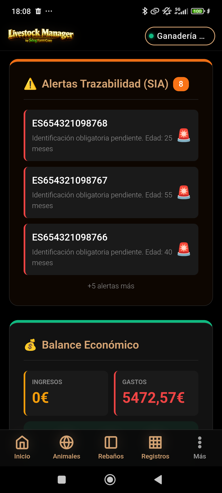

💉 Sanitarios
Control de Tratamientos y Tiempos de Espera — Guía paso a paso
MANUAL PRÁCTICO · Registro de tratamientos veterinarios
Control de Tratamientos y Tiempos de Espera — Guía paso a paso
Este manual documenta el módulo de Sanitarios de Livestock Manager. El registro de tratamientos y controles sanitarios es esencial para:
El control sanitario registra todos los tratamientos administrados a los animales: vacunaciones, desparasitaciones, antibióticos, vitaminas, cirugías, etc.
Cada tratamiento tiene tiempos de espera (carencia):
Accede al módulo de sanitarios desde Registros → Animales → pestaña Sanitarios, o desde la ficha de un animal pulsando el botón ➕ Tratamiento.
Desde la pantalla principal puedes:
El sistema soporta múltiples tipos de tratamiento veterinario. Cada uno tiene diferentes tiempos de espera y normativas asociadas.
| Tipo | Icono | Descripción | Tiempo de espera típico |
|---|---|---|---|
| Vacunación | 💉 | Inyección de vacuna (plan sanitario anual) | 0-7 días |
| Desparasitación | 🐛 | Tratamiento antiparasitario interno o externo | 5-21 días |
| Antibiótico | 🔬 | Medicamento antibiótico (inyectable u oral) | 14-45 días según droga |
| Anti-inflamatorio | 💊 | Antiinflamatorio no esteroideo | 1-3 días |
| Vitaminas | 🥗 | Suplementación vitamínica | 0 días (sin espera) |
| Cirugía | 🔪 | Procedimiento quirúrgico (castración, descorne, etc.) | 7-14 días |
| Inspección General | 👁️ | Revisión veterinaria sin tratamiento | 0 días |
| Otro | ⚙️ | Tratamiento no clasificado (especificar) | A definir |
Cada registro de tratamiento almacena información sanitaria, farmacológica y temporal.
| Campo | Tipo | Obligatorio | Descripción |
|---|---|---|---|
| tipo_tratamiento | Enum | Sí | Vacunación, Desparasitación, Antibiótico, etc. |
| medicamento | Texto | Sí | Nombre del medicamento/vacuna (ej: "Penicilina G", "Nobivac") |
| fecha | Fecha | Sí | Fecha de administración |
| dosis | Texto | No | Dosis administrada (ej: "500ml", "1 dosis") |
| veterinario | Texto | No | Nombre del veterinario que administró el tratamiento |
| tiempo_espera_carne_dias | Número | Sí | Días de carencia antes de vender para carne |
| tiempo_espera_leche_dias | Número | Sí | Días de carencia antes de vender leche |
| prohibidoLeche | Booleano | No | Si es TRUE, este medicamento prohíbe vender leche indefinidamente |
| observaciones | Texto | No | Notas adicionales (reacciones, seguimiento, etc.) |
fecha + tiempo_espera_carne_dias.
Los tiempos de espera varían según el medicamento y la vía de administración. El sistema permite configurarlos por cada tratamiento y por animal.
| Medicamento | Tipo | Carne (días) | Leche (días) |
|---|---|---|---|
| Penicilina G inyectable | Antibiótico | 28 | 7 |
| Nobivac (vacuna) | Vacunación | 0 | 0 |
| Ivermectina (antiparasitario) | Desparasitación | 21 | 28 |
| Diclofenaco (antiinflamatorio) | Anti-inflamatorio | 1 | 1 |
El sistema genera alertas automáticas para avisar del vencimiento de tiempos de espera.
| Alerta | Condición | Indicación |
|---|---|---|
| 🔴 Restricción activa | El tiempo de espera aún no ha vencido | Etiqueta roja, icono bloqueado |
| 🟡 Próximo a vencer | Vence en menos de 10 días | Etiqueta naranja, icono ⏰ |
| 🟢 Disponible | El tiempo de espera ha vencido | Etiqueta verde, el animal puede venderse |
| ⚫ Prohibido leche | Medicamento marcado con prohibidoLeche | Indicación permanente, no puede vender leche |
Un animal puede estar restringido de venta en dos contextos:
Cuando seleccionas un animal en una Venta Masiva, el sistema:
El Catálogo Sanitario (si está implementado) es una base de datos con los medicamentos más comunes y sus tiempos de espera preconfigurados.
Cada animal tiene un historial completo de todos los tratamientos recibidos, visible en su ficha sanitaria.
| Campo | Descripción |
|---|---|
| Fecha | Cuándo se administró el tratamiento |
| Tipo | Categoría del tratamiento (vacunación, antibiótico, etc.) |
| Medicamento | Nombre específico de la droga |
| Fecha de fin de espera | Cuándo el animal puede ser vendido (fecha + tiempo_espera) |
| Estado | Restringido / Próximo a vencer / Disponible |
El seed data de demostración incluye 3 tratamientos reales registrados para mostrar cómo se estructura un control sanitario completo.
| Campo | Valor |
|---|---|
| Animal | vaca1 (Vaca Frisona) |
| Tipo | Vacunación |
| Medicamento | Nobivac IP (vacuna respiratoria) |
| Fecha | 10/06/2026 |
| Dosis | 2 ml inyectable |
| Tiempo espera carne | 0 días |
| Tiempo espera leche | 0 días |
| Estado hoy (19/06/2026) | ✓ Disponible |
| Campo | Valor |
|---|---|
| Animal | vaca1 (Vaca Frisona) |
| Tipo | Desparasitación |
| Medicamento | Ivermectina 1% (antiparasitario) |
| Fecha | 01/06/2026 |
| Dosis | 1 ml/50kg |
| Tiempo espera carne | 21 días → 22/06/2026 |
| Tiempo espera leche | 28 días → 29/06/2026 |
| Estado hoy (19/06/2026) | 🟡 Próximo a vencer (3 días) |
| Campo | Valor |
|---|---|
| Animal | vaca1 (Vaca Frisona) |
| Tipo | Antibiótico |
| Medicamento | Penicilina G inyectable (500.000 UI) |
| Fecha | 05/06/2026 |
| Dosis | 2 inyecciones cada 12h (4 dosis total) |
| Veterinario | Dr. García (clínica veterinaria) |
| Tiempo espera carne | 28 días → 03/07/2026 |
| Tiempo espera leche | 7 días → 12/06/2026 (ya vencido) |
| Estado hoy (19/06/2026) | 🔴 Restringido carne (14 días) |
| Observaciones | Mastitis clínica tratada. Seguimiento el 15/06. |
El Reglamento (UE) 2019/6 y la normativa autonómica andaluza exigen que todos los tratamientos con medicamentos de uso veterinario queden registrados en el Libro de Registro de Medicamentos, que forma parte del Cuaderno de Campo que SIGGAN puede requerir en cualquier inspección.
| Sección CSV | Datos de Sanitarios incluidos |
|---|---|
| Tratamientos | Fecha, animal/rebaño, medicamento, dosis, veterinario, tiempos de espera |
| Saneamientos (ADSG) | Campañas de brucelosis, tuberculosis y otras zoonosis |
Flujo visual de registro sanitario y alertas por tiempos de espera.
